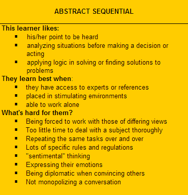

Being Abstract Sequential
(Though a lot of other things too)
What does Abstract Sequential mean?
First let's break it down into abstract and sequential. Anthony Gregorc, the man behind the idea of these mind styles, defines someone with an abstract perceptual quality as being prone "to visualize, to conceive ideas, to understand or believe that which you cannot actually see." He then goes on to say that, "When you are using your abstract quality, you are using your intuition, your imagination, and you are looking beyond 'what is' to the more subtle implications." Someone with a sequential ordering ability uses their mind to, "organize information in a linear, step-by-step manner...following a logical train of thought, a traditional approach to dealing with information." Together this gives the strengths and weaknesses presented in the following image.
What does this mean for my time at DBC?
One of the biggest struggles that I've had so far (with Phase 0) has been with pairing. The people that I've paired with have been great, and I enjoy group work in general, but so far pairing has been frustrating because I can't go ahead and learn the material at my own pace and still have something left to pair on. Hopefully that will change in the future as pairing has more to do with coding and less to do with "well they told us to." I'm sure that this will get easier during the in-person part of DBC when there will be fewer issues of finding time to pair (and thus possibly having to pair when you've done the work already) because everyone will be there.
Dealing with useful negative feedback has long been one of my most "fixed mindset" characteristics when I am otherwise usually a "growth mindset" type of person. Considering my abstract sequential style though, this may have to with my reliance on logic. If a person's reasoning for their negative feedback doesn't make sense to me (doesn't seem logical) then I might be inclined to ignore it even if at its heart it's useful. Knowing this I will try to remember to ask for clarification about feedback if it doesn't seem logical to me so that I can gain from feedback of all kinds.
A last musing on mind styles
While I know that no person is solely one style, the next closest style to abstract sequential for me is concrete sequential. It's not that close, but I often felt that every option in the quiz was valid even though I could only choose one. The point is that there clearly seems to be a separation away from the random ordering ability for me. This is funny as I have often been accused of being random or skipping around. However, the more I think about it the more I'm wondering if my "randomness" is more a sense of going through steps very quickly or in a way that isn't apparent to others, thus seeming random.